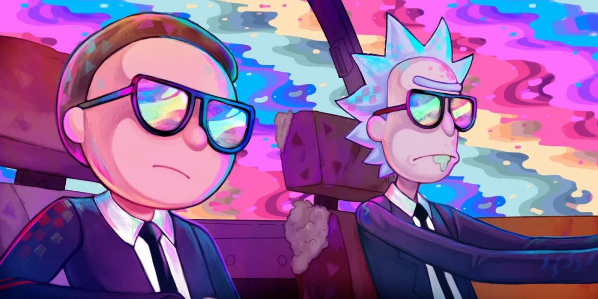

Aprendiendo ionic

Serie
¿Que es rick and morty?
Es una serie de televisión americana de animación para adultos creada por Justin Roiland y Dan Harmon en 2013 para Adult Swim, también se emitió en Cartoon Network. La serie sigue las desventuras de un científico, Rick Sanchez, y su fácilmente influenciable nieto, Morty, quienes pasan el tiempo entre la vida doméstica y los viajes espaciales, temporales e intergalácticos. Dan Harmon, el co-creador de la serie y Justin Roiland son los encargados de las voces principales de Morty y Rick, la serie también incluye las voces de Chris Parnell, Spencer Grammer y Sarah Chalke.